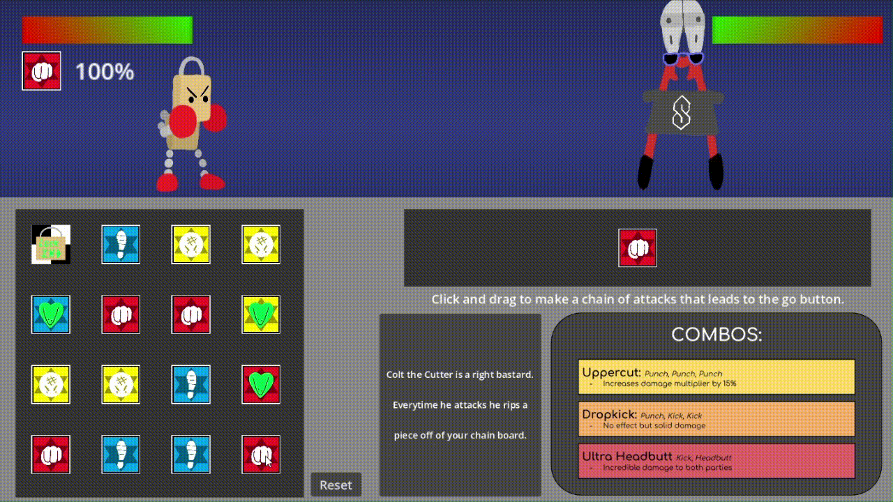

I'm Dean Copeland. I'm a Game Designer, Composer, Tabletop Role-Playing Game Enthusiast, and student at GMU. My favorite video game is Rain World, and my favorite composer is David Wise.
I've been composing music for 7 years. I do a variety of styles, but I specialize in music that is groovy, dire, epic, or some combination of the three, using a mix of orchestral and electronic instruments. Below are some examples of my music:
Making a high-speed experience like a movement shooter or time management game? I can make your players bust a move or break a sweat.
Move It |
Arctic Assault |
Pace |
|---|---|---|
| A song for fast-paced platforming/parkour. | A song for a smooth, icy battle. | An electronic song that progressively gets more urgent. |
Making a light-hearted RPG or platformer? A catchy soundtrack would suit it well.
Let's Dance! |
Vampire Rave |
The Ascent |
|---|---|---|
| A light-hearted RPG battle theme. | EDM with organs. | A song for scaling the side of a skyscraper in an action platformer. |
Got serious story scenes, fantastical landscapes, or mysterious shopkeepers? I can make them come to life.
Restoration |
The Air is Thick |
In Another Life |
|---|---|---|
| A song for a determined flame in a somber land. | A slow burn song for a tense scenario. | A song for daydreaming about a peaceful life surrounded by nature. |
Nothing gets me more enthralled than designing mechanics for video games. I'm really good at taking deep, intricate ideas and turning them into simple abstractions without sacrificing any important complexity. In other words, I can do a lot with very, very little. Here are a couple of things I've had the pleasure of being the lead designer on:
Lock-In Sock'em |
I made this game over the course of a week with a friend of mine for an unofficial game jam themed around chains. In this game, you make a string of attacks to bash the enemy with. The trick is that you have to remember what attacks you selected and in what order. A red attack (a punch) needs you to press the A key, while a yellow attack needs you to press the D key. Not only that, but you need to time the attack right too. Otherwise, you drop the combo, and the enemy gets an extra nasty counterattack. The gimmick is easy to understand but made more complex with the ability to do special attacks (such as a drop kick) with specific attack combinations. Heals are your only defensive tool, but are extra dangerous for your combo because you can't determine what color button to press for a heal based on the animation alone--you have to remember what color the icon was. The risk and reward is simple but effective. Some players opted to only do simple 1- to 2-color attack strings, making the combo easier to remember but not as rewarding to pull off (due to a lack of special moves). Some players selected the entire board of attacks--knowing that they would drop the combo but hopefully out-DPS the incoming counter-attack. You get a surprising amount of player expression for such a short game. |
|---|